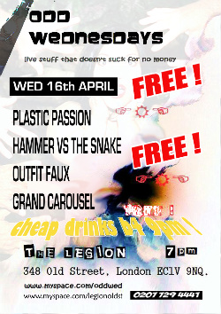

Posted on 11th April, 2008 by Greg
Filed under Gigs

Ok, so it’s late notice, but we are playing this coming Wednesday, the 16th of April, at The Legion, 348 Old Street. The night is Odd Wednesdays and you will not only get music from us as well as Plastic Passion, Grand Carousel and Outfit Faux, it won’t cost you a penny (unless you like a drink that is, but even they’re cheap before 9pm).
If there are any further details, you will probably find them on the Facebook event.
See you at the Legion!
Posted on 19th February, 2008 by Phil
Filed under Gigs
That’s right, HVTS return to their favourite London haunt, the Rhythm Factory on Tuesday 4th March to play another evening of Let Them Eat Gak.
Come on down, there’s even a map to tell you how to get there. Get in before 8:30 and you’ll see the whole show!
As we learn how to use all these new technologies, you’ll find there is also a Facebook event for this. It means you can Facebook RSVP, if you want. Or leave a shout below to say if you want to come!
Posted on 13th November, 2007 by Phil
Filed under Announcements
MySpace had the band scene covered first and HVTS have been a part of it for a little while now. I even gave our MySpace page a tidy up recently to draw it into line with this site. But now there is a competitor that appeals to people who don’t like the monstrosity that is a MySpace profile page, Facebook has launched… err Facebook Pages and now HVTS are on Facebook too!
So come and visit our page and listen to HVTS tracks on the new Facebook music player, see pictures and keep up to date with gigs, all from within Facebook. Let’s turn Facebook into MySpace together!
Posted on 18th October, 2007 by Phil
Filed under Gigs
Last Thursday saw HVTS take on Bored Youth On Prozac at The Rhythm Factory. Thanks to all who managed to come and watch, we hope you enjoyed the night! We all really enjoyed it and are looking forward to doing it again and again and again (look out for more news soon)!
I even got a couple of pictures which you can see in the gallery. If anyone else was taking pictures that night, I’d love to put them up here too, just drop me an email at hammervsthesnake [at] gmail [dot] com.
Posted on 16th October, 2007 by Phil
Filed under Reviews
We nearly missed this! Back in July OxfordBands.com reviewed our Shifty Disco release of Blame (Kick remix). They seemed to like it too, here’s a taster of what they had to say:
Retaining most elements of the original, the track begins with a burring synth riff. Underpinned by punchy drums and interspersed with layers of vocals it drives forward to a great hands-in-the-air breakdown.
Thanks very much to Peter Fry from OxfordBands.com. Remember, you can listen to the remix at our MySpace or purchase your very own copy at OxfordMusic.net.